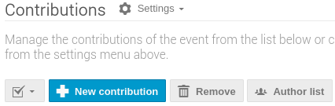
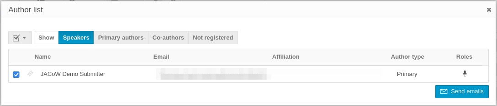

Invitations to invited speakers
Now that we have a Scientific Programme with (proposed) invited contributions, sessions, session blocks and programme codes, it's time to notify the proposed speakers about this opportunity of theirs.
Note: so far the details of the programme are not public and restricted to those selected under Protection, as explained in Who can see the timetable now?.
We recommend to keep it protected until all the invited abstracts will be accepted by the proposed authors. Otherwise, people could find they have an abstract under their name without knowing by just logging in the event.
Send invitations to invited speakers
Via Indico
To use the Indico features to send email invitations to potential speakers, go to Organisation > Contributions, select the contributions you want to notify their speakers and click on the "Author list button:

then select the authors to notify and click "Send emails"

then compose the email as usual and send them.
Via external mail merge
To further customise the email or for using other methods of communication (like normal/snail mail), you can use the CSV/Excel export feature available under Organisation > Contributions. As usual, you have to select the contributions you want to export and click on the "Export button.
Cleaning up to remove proposals
At this stage, the invited oral proposals submitted as "abstracts" and which have been "accepted" for presentation have become "contributions".
Abstracts not "accepted" remain as "abstracts" in the system unless removed.
It is possible to withdraw abstracts/proposals, but these remain in the system and will be visible to designated Speakers who may later login.
It is thus desirable to remove them entirely once all invited speakers have accepted the invitations – though it may be advisable to export a copy of all proposals for later reference should a Speaker later be unable to participate.
To export contributions go to Workflows > Call for Abstracts > Manage, filter them accordingly, select all, then press the "export" button. We suggest to export to CSV .
Note: so far it is not yet possible to import back affiliations with this format. A request to the Indico developers team has been filed to ease these operations.
To remove unwanted abstracts/proposals, from Workflows > Call for Abstracts > Manage, select all unwanted proposals via Customise list then Select all and finally Remove (the bin). Be sure to remove only the abstracts and not abstracts + linked contributions.
You may want to delete only the abstracts whose proposals were not accepted. However, we recommend to remove all the abstracts proposed for invited presentations at this stage. If not, when the authors will login to the event and acces the Call for Abstracts area, they will be able to see the original SAB/SPC/OC submitter (proposer) name under "My abstracts", which would result in a possibly unpleasant situation.
Setting public access to the event
At this point the general call for abstracts is still closed. The system contains only the invited talks scheduled in sessions, but their authors cannot access their contributions to modify any attribute (title, content, co-authors...).
It's time to open the event to the public: following the []same instructions seen when starting this exercise](SSsetup.md/#important-notes-on-permissions), you now want to set the Event protection to Public (or Inheriting, whenever the parte event category is set to Public.)